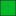

<!doctype html>
<html lang="en">
    <head>
        <meta charset="utf-8">
        <meta http-equiv="X-UA-Compatible" content="IE=edge">
        <meta name="viewport" content="initial-scale=1,user-scalable=no,maximum-scale=1,width=device-width">
        <meta name="mobile-web-app-capable" content="yes">
        <meta name="apple-mobile-web-app-capable" content="yes">
        <link rel="stylesheet" href="css/leaflet.css">
        <link rel="stylesheet" href="css/qgis2web.css"><link rel="stylesheet" href="css/fontawesome-all.min.css">
        <link rel="stylesheet" href="css/leaflet-control-geocoder.Geocoder.css">
        <style>
        html, body, #map {
            width: 100%;
            height: 100%;
            padding: 0;
            margin: 0;
        }
        </style>
        <title>Arizona</title>
    </head>
    <body>
        <div id="map">
        </div>
        <script src="js/qgis2web_expressions.js"></script>
        <script src="js/leaflet.js"></script>
        <script src="js/leaflet.rotatedMarker.js"></script>
        <script src="js/leaflet.pattern.js"></script>
        <script src="js/leaflet-hash.js"></script>
        <script src="js/Autolinker.min.js"></script>
        <script src="js/rbush.min.js"></script>
        <script src="js/labelgun.min.js"></script>
        <script src="js/labels.js"></script>
        <script src="js/leaflet-control-geocoder.Geocoder.js"></script>
        <script src="data/Arizona_1.js"></script>
        <script src="data/NationalParks_2.js"></script>
        <script>
        var highlightLayer;
        function highlightFeature(e) {
            highlightLayer = e.target;

            if (e.target.feature.geometry.type === 'LineString') {
              highlightLayer.setStyle({
                color: '#00ff1e',
              });
            } else {
              highlightLayer.setStyle({
                fillColor: '#00ff1e',
                fillOpacity: 1
              });
            }
        }
        var map = L.map('map', {
            zoomControl:true, maxZoom:28, minZoom:1
        }).fitBounds([[28.224392059589924,-121.36955839569875],[40.75442510045461,-97.81494914882335]]);
        var hash = new L.Hash(map);
        map.attributionControl.setPrefix('<a href="https://github.com/tomchadwin/qgis2web" target="_blank">qgis2web</a> &middot; <a href="https://leafletjs.com" title="A JS library for interactive maps">Leaflet</a> &middot; <a href="https://qgis.org">QGIS</a>');
        var autolinker = new Autolinker({truncate: {length: 30, location: 'smart'}});
        var bounds_group = new L.featureGroup([]);
        function setBounds() {
        }
        map.createPane('pane_Basemap_0');
        map.getPane('pane_Basemap_0').style.zIndex = 400;
        var layer_Basemap_0 = L.tileLayer('http://tile.openstreetmap.org/{z}/{x}/{y}.png', {
            pane: 'pane_Basemap_0',
            opacity: 1.0,
            attribution: '<a href="https://www.openstreetmap.org/copyright">© OpenStreetMap contributors, CC-BY-SA</a>',
            minZoom: 1,
            maxZoom: 28,
            minNativeZoom: 0,
            maxNativeZoom: 19
        });
        layer_Basemap_0;
        map.addLayer(layer_Basemap_0);
        function pop_Arizona_1(feature, layer) {
            layer.on({
                mouseout: function(e) {
                    for (i in e.target._eventParents) {
                        e.target._eventParents[i].resetStyle(e.target);
                    }
                },
                mouseover: highlightFeature,
            });
            var popupContent = '<table>\
                    <tr>\
                        <td colspan="2">' + (feature.properties['NAME'] !== null ? autolinker.link(feature.properties['NAME'].toLocaleString()) : '') + '</td>\
                    </tr>\
                </table>';
            layer.bindPopup(popupContent, {maxHeight: 400});
        }

        function style_Arizona_1_0() {
            return {
                pane: 'pane_Arizona_1',
                opacity: 1,
                color: 'rgba(35,35,35,1.0)',
                dashArray: '',
                lineCap: 'butt',
                lineJoin: 'miter',
                weight: 1.0, 
                fill: true,
                fillOpacity: 1,
                fillColor: 'rgba(58,201,230,0.3764705882352941)',
                interactive: false,
            }
        }
        map.createPane('pane_Arizona_1');
        map.getPane('pane_Arizona_1').style.zIndex = 401;
        map.getPane('pane_Arizona_1').style['mix-blend-mode'] = 'normal';
        var layer_Arizona_1 = new L.geoJson(json_Arizona_1, {
            attribution: '',
            interactive: false,
            dataVar: 'json_Arizona_1',
            layerName: 'layer_Arizona_1',
            pane: 'pane_Arizona_1',
            onEachFeature: pop_Arizona_1,
            style: style_Arizona_1_0,
        });
        bounds_group.addLayer(layer_Arizona_1);
        map.addLayer(layer_Arizona_1);
        function pop_NationalParks_2(feature, layer) {
            layer.on({
                mouseout: function(e) {
                    for (i in e.target._eventParents) {
                        e.target._eventParents[i].resetStyle(e.target);
                    }
                },
                mouseover: highlightFeature,
            });
            var popupContent = '<table>\
                    <tr>\
                        <th scope="row">Code</th>\
                        <td>' + (feature.properties['UNIT_CODE'] !== null ? autolinker.link(feature.properties['UNIT_CODE'].toLocaleString()) : '') + '</td>\
                    </tr>\
                    <tr>\
                        <th scope="row">Name</th>\
                        <td>' + (feature.properties['UNIT_NAME'] !== null ? autolinker.link(feature.properties['UNIT_NAME'].toLocaleString()) : '') + '</td>\
                    </tr>\
                    <tr>\
                        <th scope="row">State</th>\
                        <td>' + (feature.properties['STATE'] !== null ? autolinker.link(feature.properties['STATE'].toLocaleString()) : '') + '</td>\
                    </tr>\
                    <tr>\
                        <th scope="row">Region</th>\
                        <td>' + (feature.properties['REGION'] !== null ? autolinker.link(feature.properties['REGION'].toLocaleString()) : '') + '</td>\
                    </tr>\
                    <tr>\
                        <th scope="row">Type</th>\
                        <td>' + (feature.properties['UNIT_TYPE'] !== null ? autolinker.link(feature.properties['UNIT_TYPE'].toLocaleString()) : '') + '</td>\
                    </tr>\
                    <tr>\
                        <th scope="row">Park Name</th>\
                        <td>' + (feature.properties['PARKNAME'] !== null ? autolinker.link(feature.properties['PARKNAME'].toLocaleString()) : '') + '</td>\
                    </tr>\
                </table>';
            layer.bindPopup(popupContent, {maxHeight: 400});
        }

        function style_NationalParks_2_0() {
            return {
                pane: 'pane_NationalParks_2',
                opacity: 1,
                color: 'rgba(35,35,35,1.0)',
                dashArray: '',
                lineCap: 'butt',
                lineJoin: 'miter',
                weight: 1.0, 
                fill: true,
                fillOpacity: 1,
                fillColor: 'rgba(0,186,40,1.0)',
                interactive: true,
            }
        }
        map.createPane('pane_NationalParks_2');
        map.getPane('pane_NationalParks_2').style.zIndex = 402;
        map.getPane('pane_NationalParks_2').style['mix-blend-mode'] = 'normal';
        var layer_NationalParks_2 = new L.geoJson(json_NationalParks_2, {
            attribution: '',
            interactive: true,
            dataVar: 'json_NationalParks_2',
            layerName: 'layer_NationalParks_2',
            pane: 'pane_NationalParks_2',
            onEachFeature: pop_NationalParks_2,
            style: style_NationalParks_2_0,
        });
        bounds_group.addLayer(layer_NationalParks_2);
        map.addLayer(layer_NationalParks_2);
            var title = new L.Control();
            title.onAdd = function (map) {
                this._div = L.DomUtil.create('div', 'info');
                this.update();
                return this._div;
            };
            title.update = function () {
                this._div.innerHTML = '<h2>Arizona</h2>';
            };
            title.addTo(map);
        var osmGeocoder = new L.Control.Geocoder({
            collapsed: true,
            position: 'topleft',
            text: 'Search',
            title: 'Testing'
        }).addTo(map);
        document.getElementsByClassName('leaflet-control-geocoder-icon')[0]
        .className += ' fa fa-search';
        document.getElementsByClassName('leaflet-control-geocoder-icon')[0]
        .title += 'Search for a place';
        var baseMaps = {};
        L.control.layers(baseMaps,{' National Parks': layer_NationalParks_2,' Arizona': layer_Arizona_1,"Basemap": layer_Basemap_0,},{collapsed:false}).addTo(map);
        setBounds();
        </script>
    </body>
</html>
